Invalidprescription
《星空》支线任务：引导、解谜、战斗与空间叙事
项目概览
该关卡是一个《星空》支线任务，包含解谜、狙击、潜行、说服等元素。玩家来到一个布满岩石的贫瘠星球，帮助当地村民探究疾病的源头与医生的去向，并在故事结尾做出一个两难选择。
关卡布局
关卡由室外聚落与双层室内空间组成。室外部分负责建立主要地标、次要地标、任务方向和危险区域；室内一层与二层承载解谜、潜行、战斗和叙事信息。玩家在推进过程中会从不同高度反复观察同一空间，因此布局同时服务于引导、预先获取信息和战斗复用。

目标 1：如何引导玩家
主要地标、次要地标与遮挡关系
我通过布置主要地标、次要地标和遮挡关系，使玩家在不同位置看到不同层级的信息。最终目标并不是始终完整暴露，而是随着玩家位置和建筑朝向的变化被展示、遮挡或重新框取，从而把注意力交给当前要完成的目标。
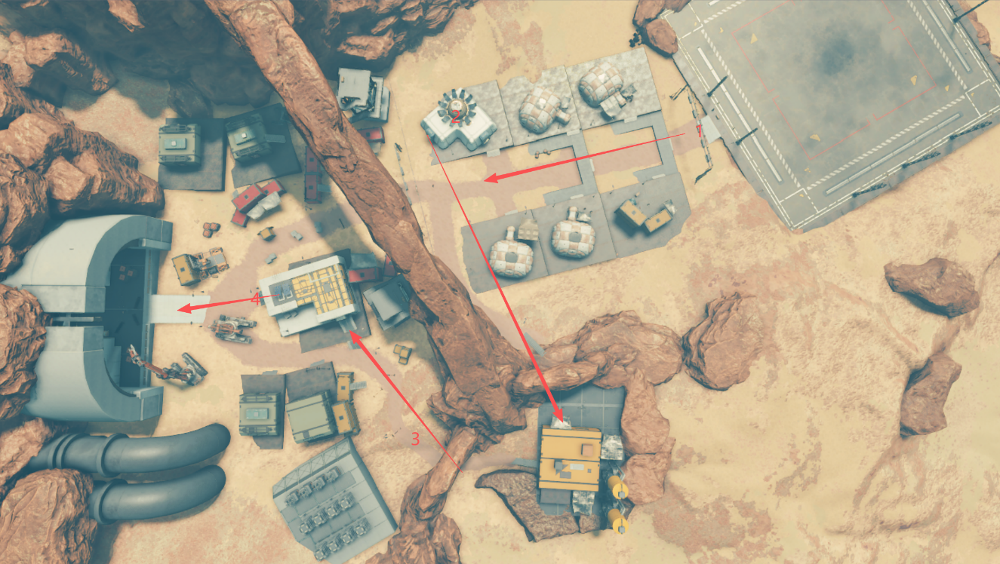
玩家到达星球后处于位置 1，并朝箭头 1 的方向前进。此时玩家能够看到室外部分的最终目标：一个巨大的混凝土拱门和一个风化的石头拱门；两侧建筑同时形成视线限制，避免玩家一次接收过多无关信息。

当玩家到达位置 2、3 后，建筑朝向发生改变，玩家视线也随之转变。之前不容易发现的次要地标开始进入视野，并使用亮黄色吸引注意力。
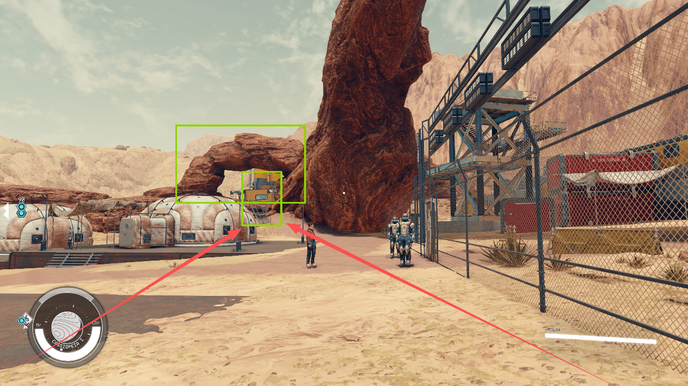
玩家处于位置 3 时，最终目标拱门会被暂时遮挡。图中的红色线框表示被隐藏的目标；这个遮挡把玩家视线重新聚焦在当前任务上，避免远期目标干扰眼前决策。
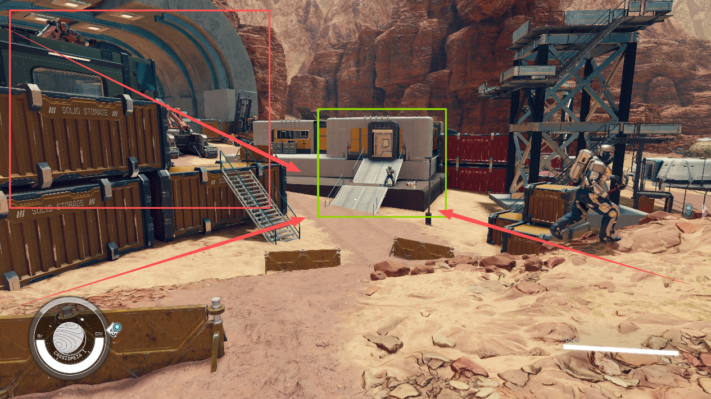
玩家处于位置 4 时，我使用大型车辆限制视野，并利用车辆轮廓形成引导线，使玩家能够明确下一目标。
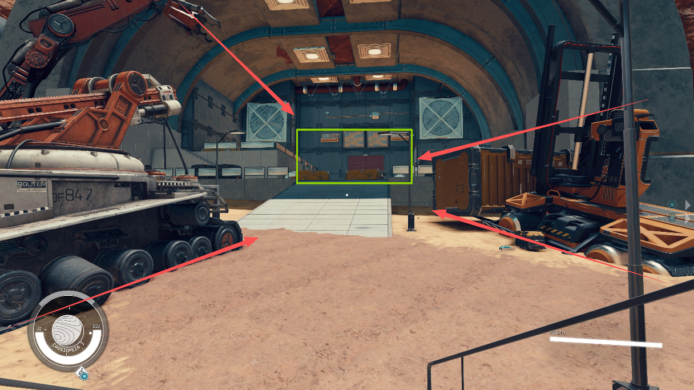
通过 Conveyance 传达区域可通过性
我通过敌人布置和演出动画，让玩家在进入前判断区域是否危险。危险区域中有两名重装守卫，后方士兵正在练习射击，远处还有巡逻敌人；这些活动共同告诉玩家，前方不是普通通道，而是需要观察和准备的战斗区。

当 NPC 出现在某一区域时，玩家会意识到这里暂时安全，可以对话或恢复状态。安全空间和战斗空间使用不同的角色状态与活动强度，让玩家不依赖文字也能判断节奏变化。
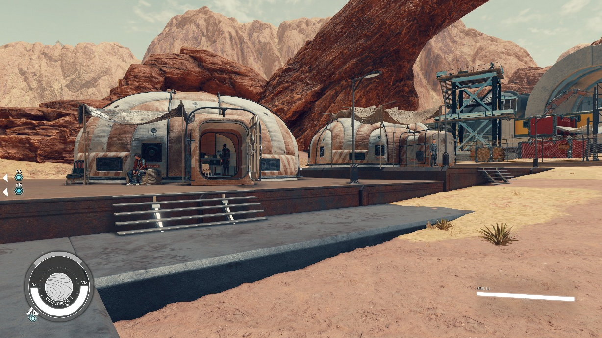
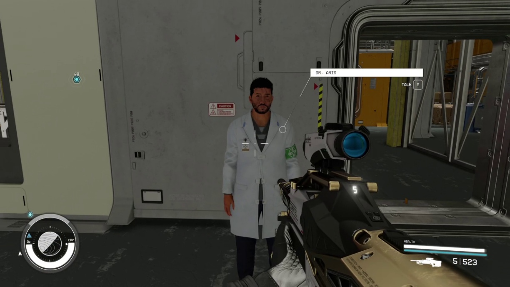
窗户等不会完全阻断视线的物体让玩家提前获得信息，从而在真正进入战斗空间之前观察敌人位置，并做好战斗或潜行准备。
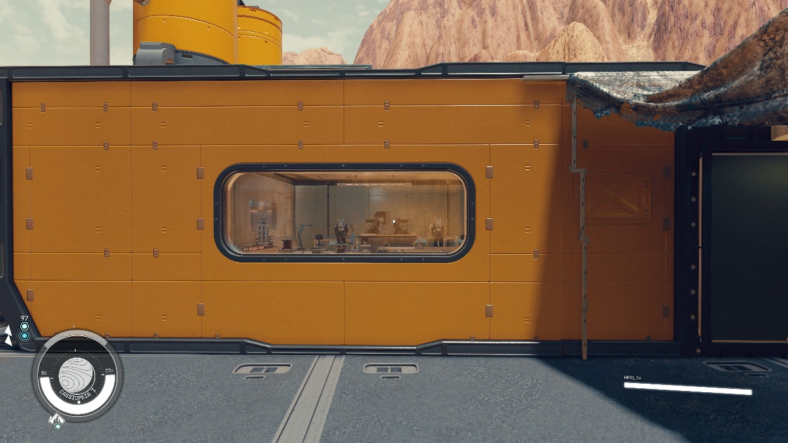

使用色彩吸引注意力并建立空间记忆
需要玩家前往的区域使用与周围环境相反的颜色。例如图中目标区域使用白色，从周边环境中凸显出来。

危险区域使用代表危险的颜色进行警告。被红色集装箱包围的区域非常开阔、掩体较少，玩家容易被敌人包围；红色因此同时服务于视觉警告和空间性质的传达。室内空间还会使用不同的主色，使玩家对每个房间留下独立印象，帮助理解整体空间。

目标 2：如何设计解谜
教学玩家核心机制
在任务早期，我强制玩家完成基础谜题；如果不理解机制，就无法进入下一步骤。这样可以确保玩家真正学会规则。教学之后需要立刻强化记忆，再逐步扩展机制。室外部分为了让玩家掌握“使用电池开启安全门”，一共设置了三处练习，通过反复训练加深记忆。
重复使用相同的 Conveyance
无论谜题设置在哪里，我都使用一致的红绿灯光：一旦出现红光，就一定存在一扇锁住、需要供电的安全门；绿光则表示电路已经连通。相同的反馈反复出现，让玩家把颜色直接与机制状态联系起来。
灯光和电线进一步完善谜题信息的传达：灯光显示当前状态，电线把电源与目标在视觉上连接起来，让玩家能够追踪因果关系。

设置谜题视线
玩家从房间中出来时的朝向，或到达新区域后的初始朝向，一定面对电池或谜题。玩家可能暂时无法到达电池所在的房间，但会先看到它的位置并留下记忆；之后路线开放时，玩家已经知道应该返回哪里。
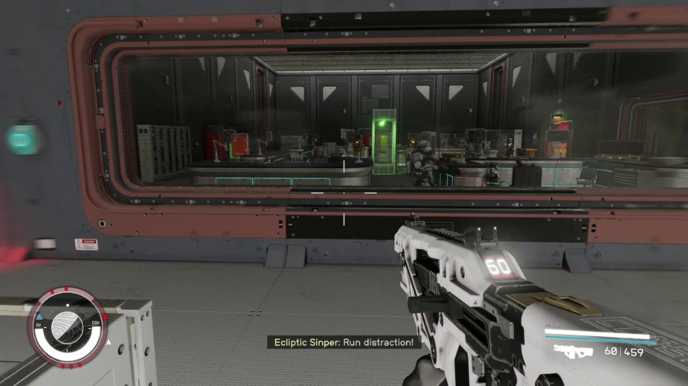
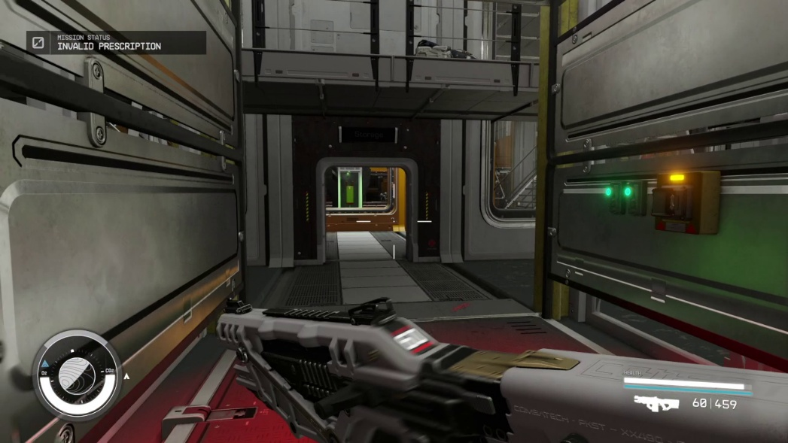
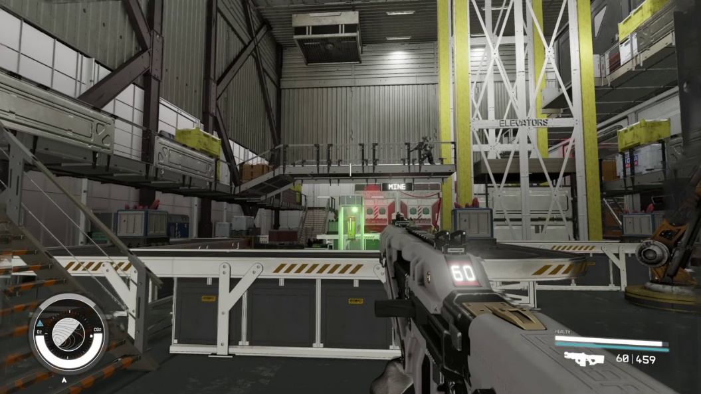
目标 3：让战斗更丰富
让每场战斗先有热身
每场战斗开始时，我都会设置一个背对玩家的敌人。玩家可以轻松完成第一次击杀，熟悉当前武器与空间，再进入更复杂的敌人组合。


混合不同类型的敌人
敌人组合会改变玩家的移动和目标优先级。近战敌人与远程敌人搭配时，玩家需要一边拉开距离，一边处理远处枪线；近战敌人与中距离敌人搭配时，则需要在有限空间内更频繁地切换掩体和目标。
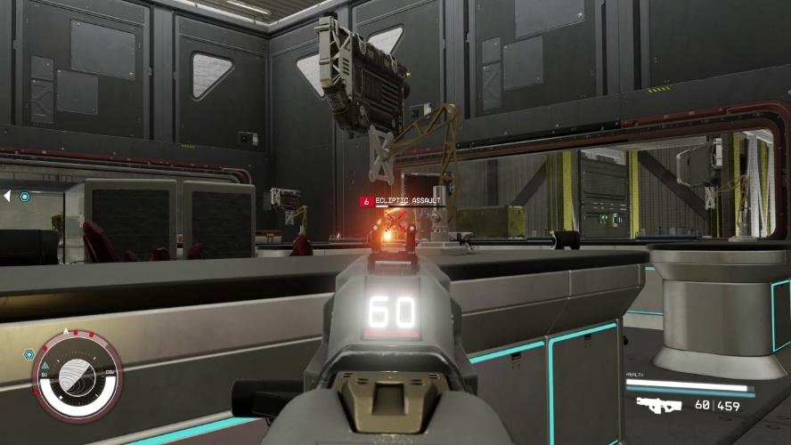

通过敌人位置促使玩家更换武器
我会把部分敌人放在难以击杀的位置，促使玩家主动更换武器。高台敌人会降低中距离武器的收益；玩家位于较高、较远位置时适合使用狙击枪，进入中距离后使用步枪，进入走廊的近距离战斗后再使用霰弹枪。武器切换由距离、视线和空间尺度共同驱动。
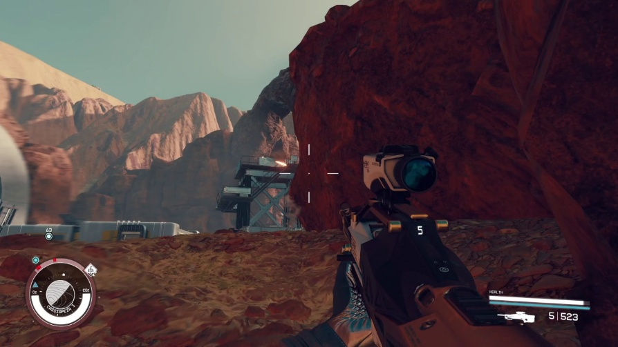
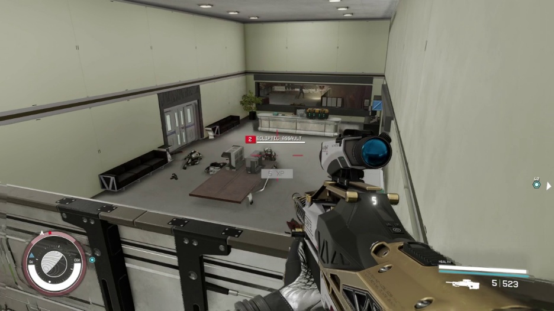
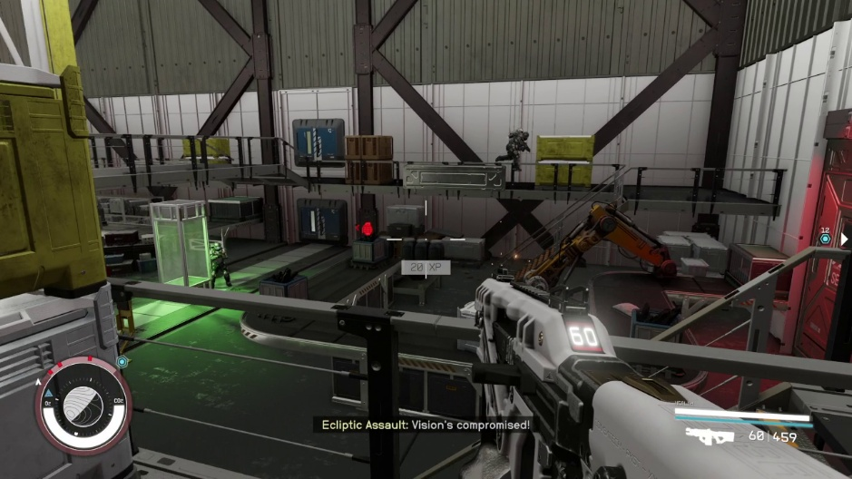
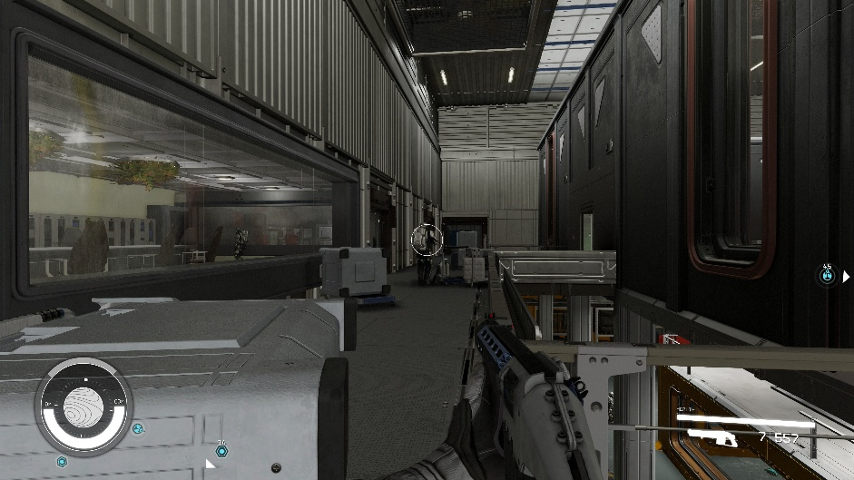
重复利用同一空间的不同高度
当玩家位于空间的不同高度时，敌人会刷新在玩家上方或下方。这样既能重复利用空间，也能让玩家在同一房间获得不同的战斗体验和信息结构。


为潜行提供可规划的信息
我设置敌人巡逻路线，并让玩家提前获得这些信息，使玩家能够观察巡逻规律、选择等待时机并规划潜行路线，而不是在进入区域后被动反应。

针对敌人类型设计掩体
面对近战敌人时，我使用中心掩体，使玩家可以围绕掩体与敌人周旋；面对远程高处敌人时，使用更高的掩体来阻断上方枪线；面对数量较多的敌人时，使用中等高度掩体，使玩家既能获得信息，也能短暂规避火力。


目标 4：空间叙事
物品摆放与环境风格
室外以风化岩石为主基调，并搭配破旧的居民住宅，使视觉风格符合贫瘠星球和当地生活状态。居民住宅内部放置破旧沙发和矿工常用工具；雇佣兵休息室则放置沙发、扑克牌和啤酒等物品，用具体生活痕迹区分不同人群。

家具既服务战斗，也补充叙事
医生实验室中有两名近战敌人，因此我布置两个长桌作为掩体，让玩家拥有足够空间与近战敌人周旋；长桌同时符合实验室的功能。
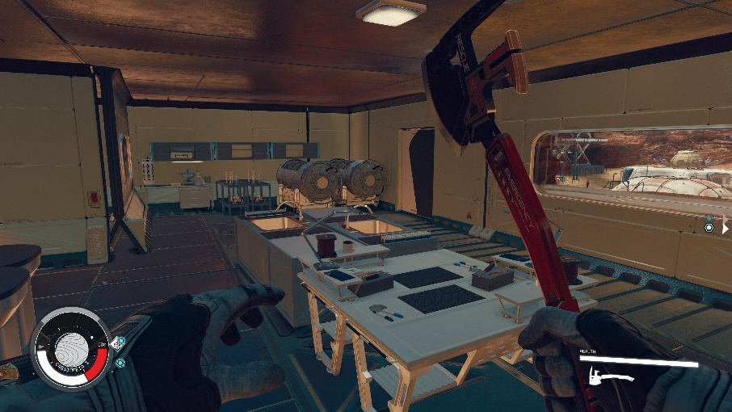
工厂内部使用大量传送带作为中等高度掩体。玩家可以蹲下换弹并规避子弹，也可以跳跃通过；传送带既符合工厂功能，也形成战斗中的移动选择。
雇佣兵营地的高处哨塔有敌人，因此地面使用高掩体，使玩家能够规避来自上方的枪线；掩体形式由敌人位置和叙事功能共同决定。
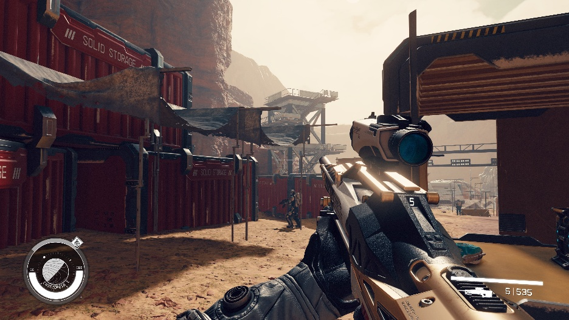
使用灯光、后处理与体积雾塑造氛围
矿场区域通过体积雾与灯光塑造压抑、浑浊的工作环境。关卡完成后，玩家离开时会看到朝阳；这个画面暗示小镇可能迎来新生，也可能什么都没有改变，与结尾的两难选择保持一致。

目标 5：资源管理与节奏调整
室内和室外部分都把呼吸空间穿插在战斗空间之间，用空间类型调整战斗节奏。下图中红色代表战斗空间，绿色代表呼吸空间。玩家在高强度遭遇之后会获得观察、对话、恢复和重新规划的机会，再进入下一场战斗。
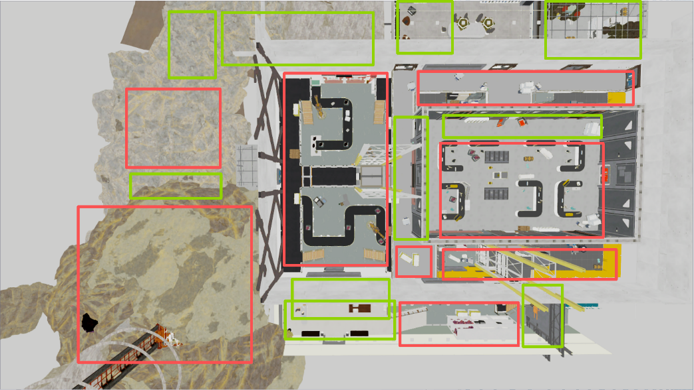

关卡画廊
以下为最终游戏画面。点击图片可查看原图。